早上九時十分離開住宿了兩晚的中文本暱客雅酒店, 乘巴士往下一個停留城市-西歸浦, 約上午九時五十五分便抵達我們下榻的 M-STAY Hotel Jeju, 將行李寄放在酒店後, 突然想起我們這幾天使用 T-money 卡時, 下車都沒有或忘記拍卡, 根據網上一些傳言, 說如果下車時不拍 T-money 卡會罰款的! 但我們看見很多乘客在下車時都沒有拍卡的! 再者, 很多巴士上落都在車頭, 只有一個拍卡機, 下車時根本沒法拍卡! 為了弄清楚這問題, 以免罰了款也不知, 便問酒店的服務員, 她笑著說: 沒有下車不拍 T-money 卡會罰款這條例, 下車拍卡是為了轉乘巴士優惠而已!
知道沒有下車不拍 T-money 卡會罰款這條例, 總算安了心。接著在大堂的沙發坐下來, 看著西歸浦的地圗, 粗略定下遊覽路線, 便開始今天的行程。
因有一整天的時間, 按計劃, 我們會用雙腳遊覽西歸浦的主要景點:
M-STAY Hotel Jeju → 偶來6號小路 → 李仲燮街 (이중섭거리) → 李仲變 路 →
李仲變 公園 → 李仲變 故居 → 天地淵瀑布 → 新緣橋 (새연교) → 鳥島 →
七十里路 → 徐福公園 (서복공원) → 正房瀑布 (정방폭포) →
西歸浦每日偶来市場 (서귀포매일올레시장) → M-STAY Hotel Jeju雖然天空不時飄起毛毛雨, 最後也不疾不徐地順利完成所有定下的行程。
步出酒店, 天空又開始飄著惱人的毛毛細雨, 便走回酒店取雨傘, 才正式開始西歸浦的行程。
偶來6號小路
沿酒店前的 Jungang Road (중정로) 朝東面走, 這裡已經是偶來6號小路的其中一段。因下雨關係, 相機鏡頭經常有一點點的水花, 拍照很不方便, 頗氣憤的, 隨便應酬式的拍了幾張便算了。
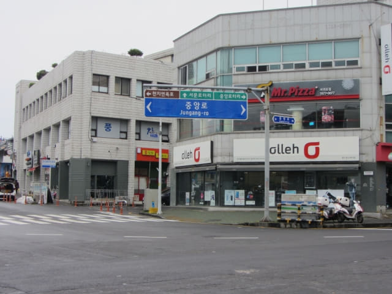
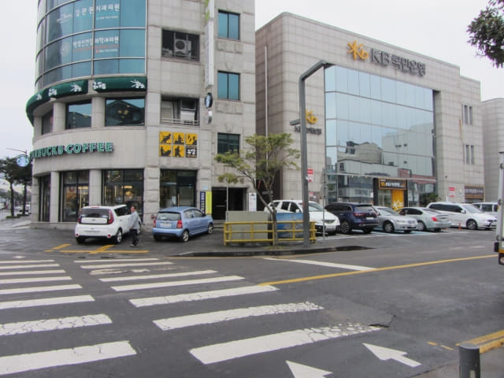
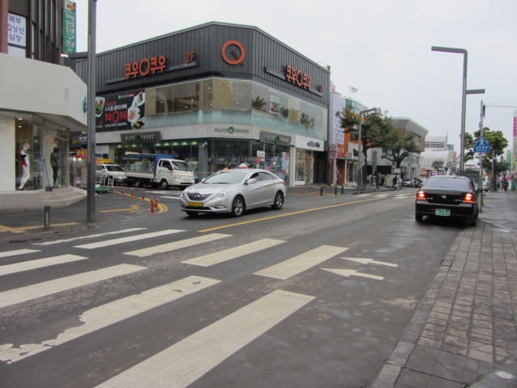
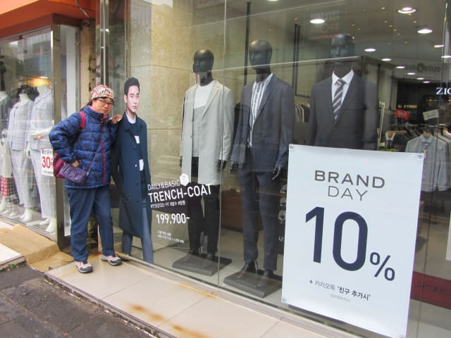
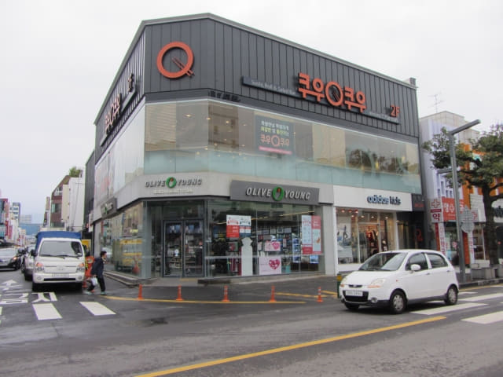
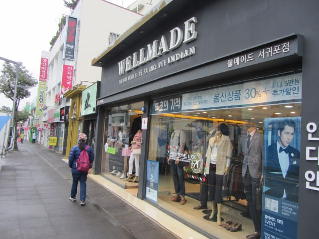
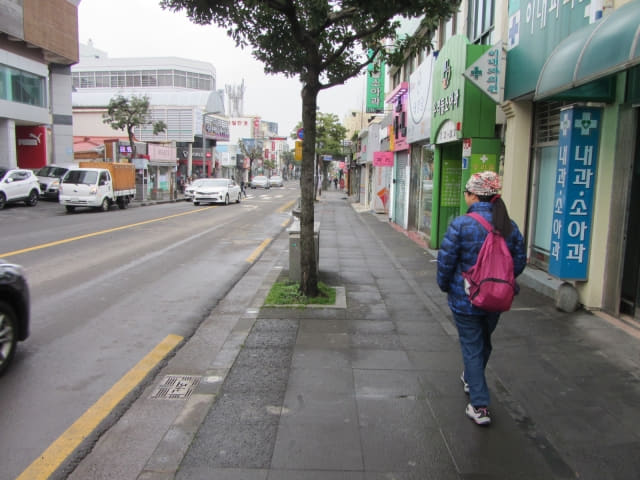
很快便來到一個十字路口, 往右走便是李仲燮路 (이중섭로 Leejungseop Road)
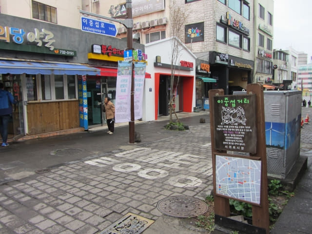
西歸浦每日偶來市場 (서귀포매일올레시장 Seogwipo Daily Olle Market)
望望左邊, 原來已經是西歸浦每日市場的入口, 按計劃是傍晚才來這裡的, 但看見天空正飄著雨絲, 便先進內逛逛, 順便避雨。
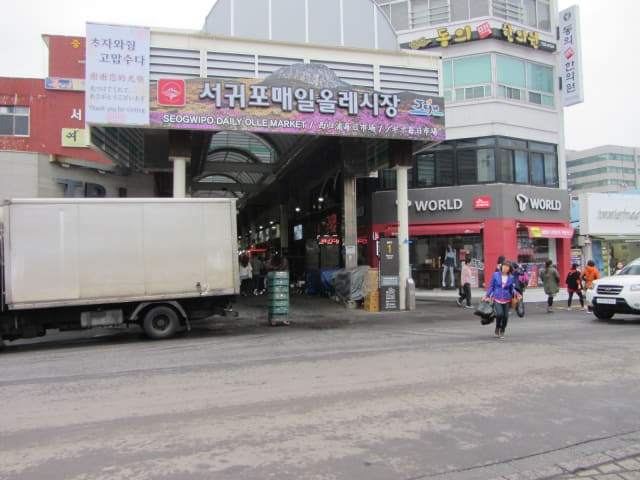
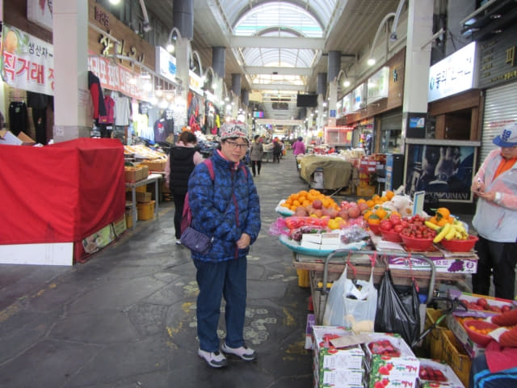
喔! 草莓大大盒只售6,000韓元, 比橙便宜很多!
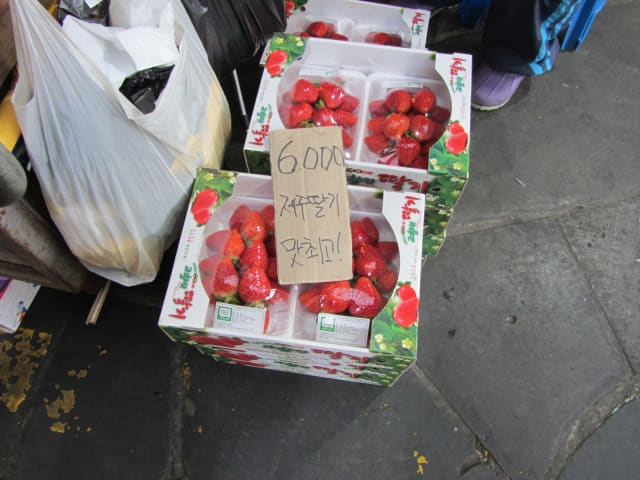
西歸浦每日市場主要售價日常用品、肉食、蔬菜和水果。
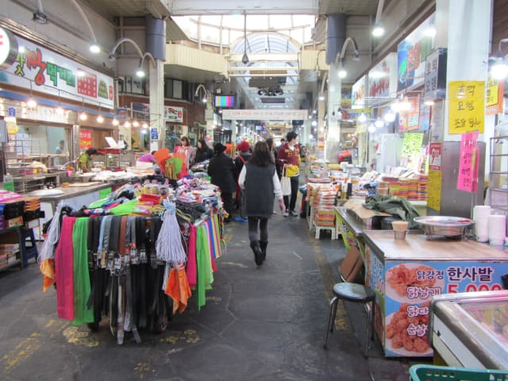
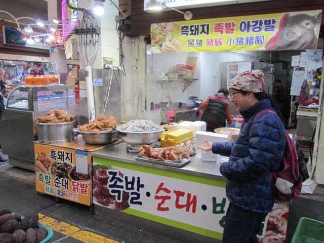
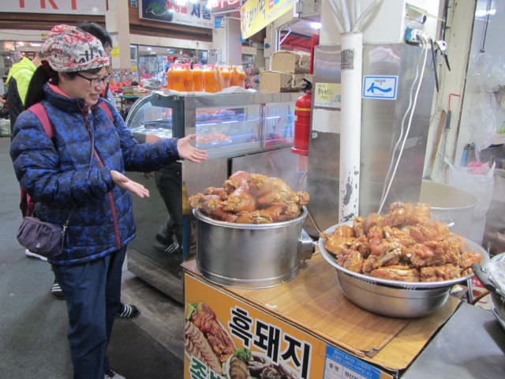
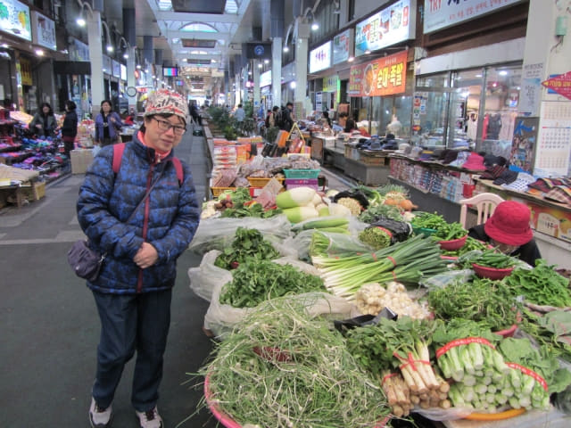
西歸浦每日市場最大特色是中間有一條飼養了很多鯉魚的溪流, 兩旁是兩排長長的櫈子, 方便旅客在攤檔買完食物後坐下來進食, 但看見旅客都喜歡邊走邊吃。
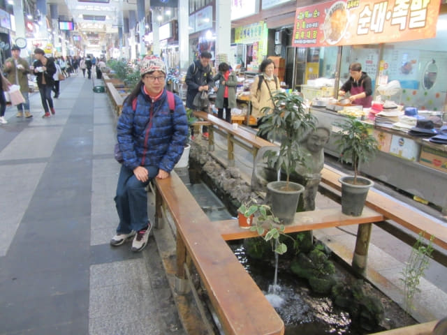
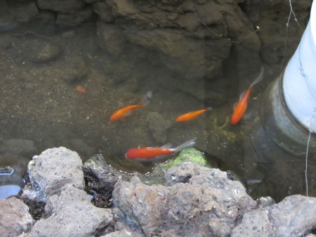
拱圓形的上蓋, 設計和日本的商店街一樣。最大不同是日本的商店街比較清潔整齊。
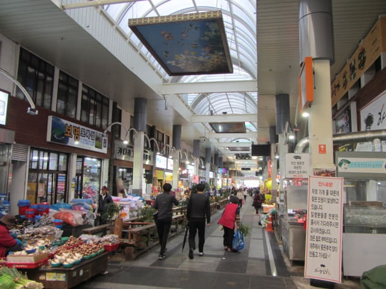
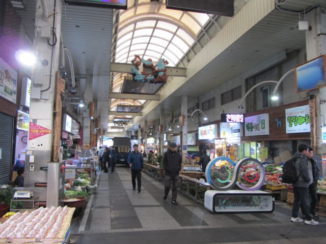
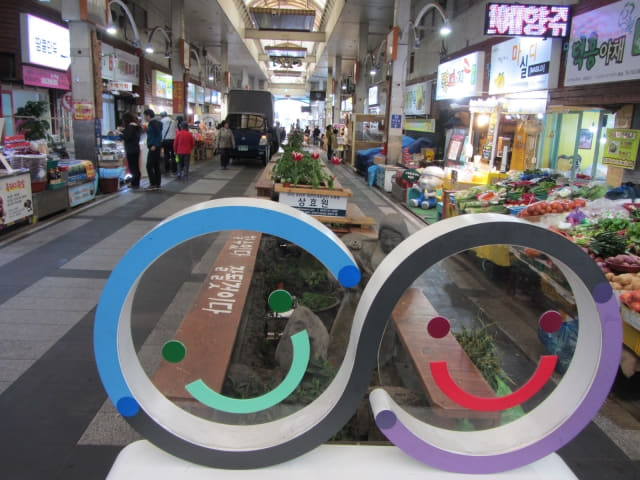
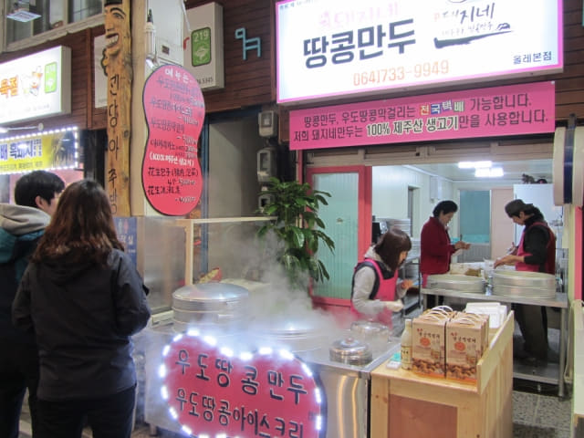
橫巷的壁畫。
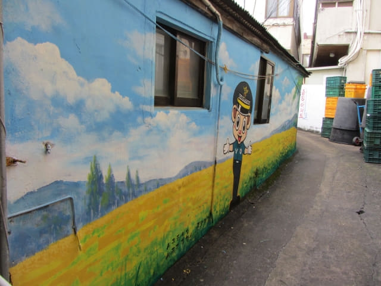
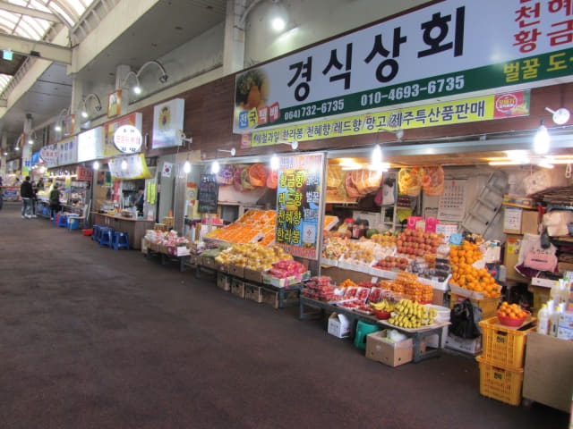
走累了可隨便坐下來休息。
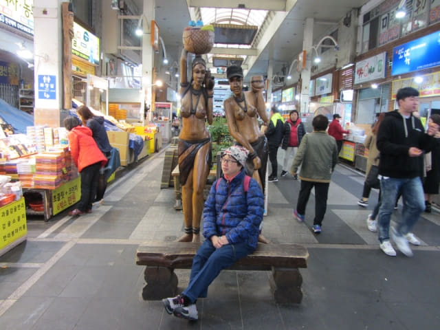
接著是海鮮攤檔。
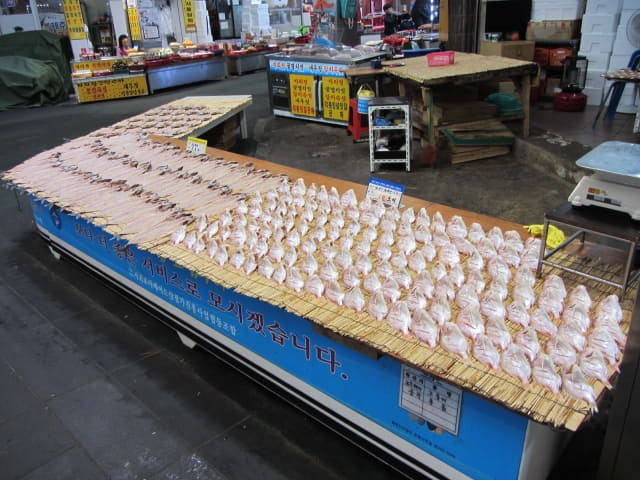
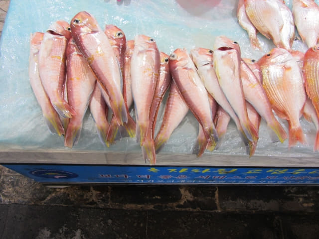
看! 應該就是昨天在沙溪港看見海女放入海中飼養紅色蠕動的海產, 養大後便是這顏色, 真是海参來的!
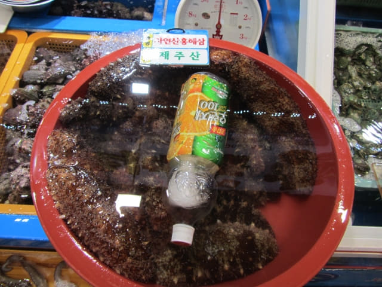
所有海鮮餐館都設在西歸浦每日市場另一邊的出入口。
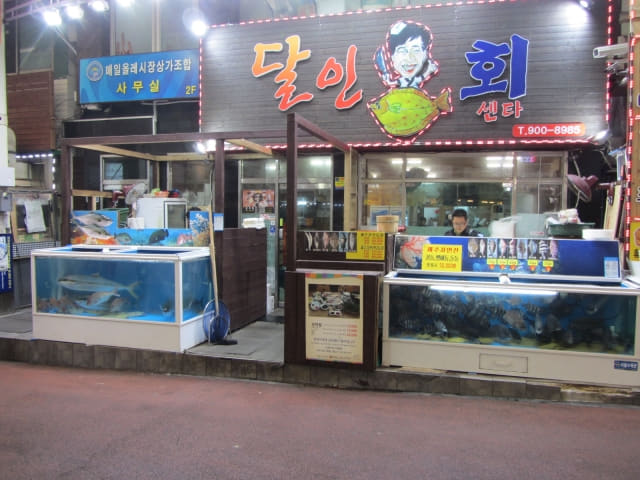
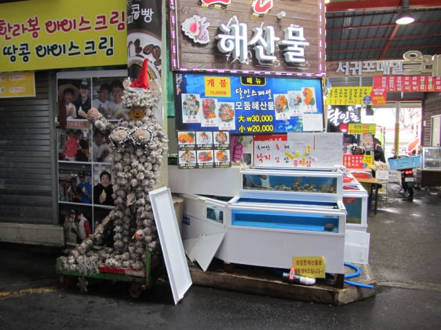
這海鮮餐館的菜單最吸引, 海鮮剌身套餐, 每人只是10,000韓元, 我們差不多已經決定在這裡吃晚餐。
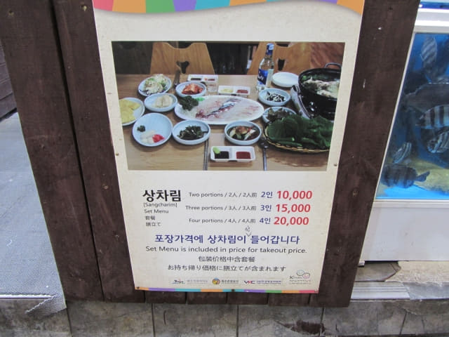